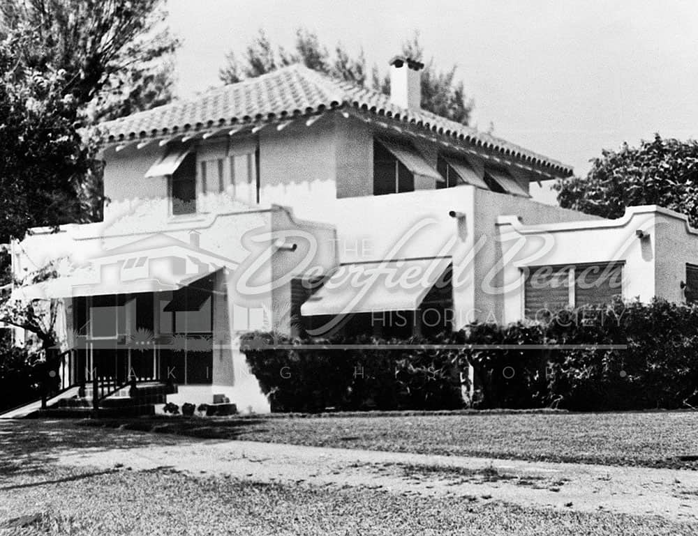
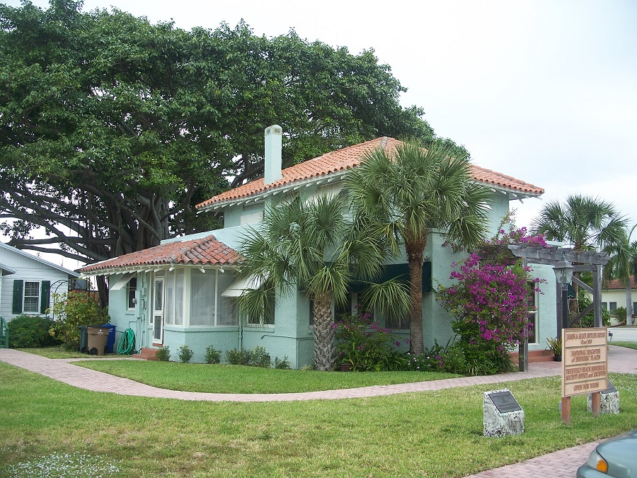
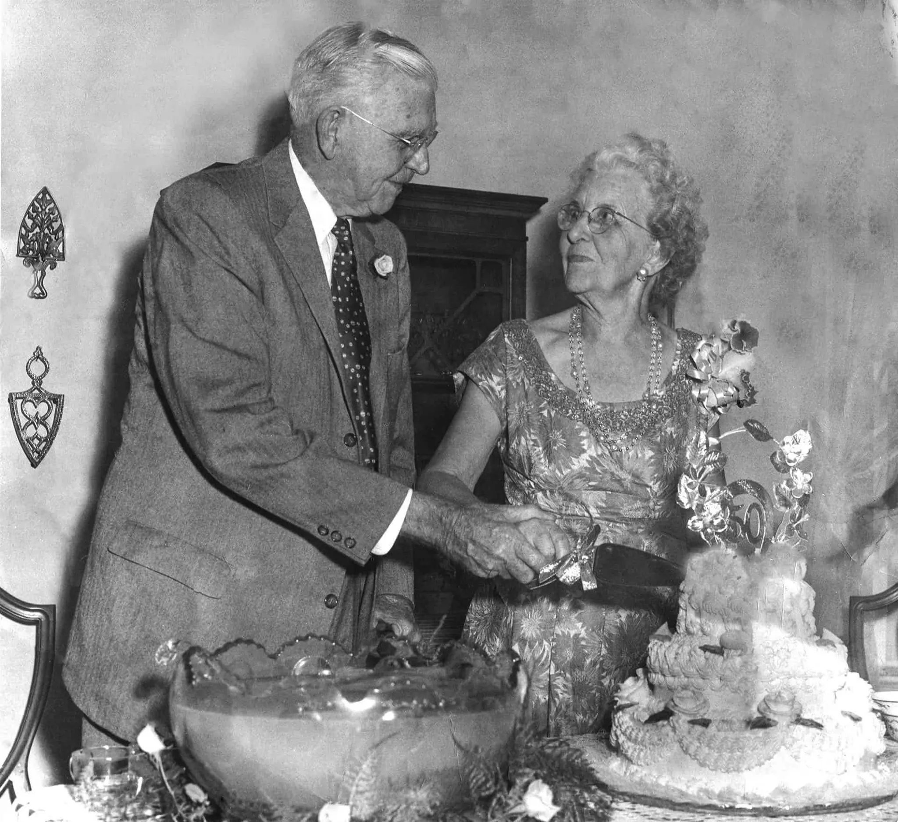
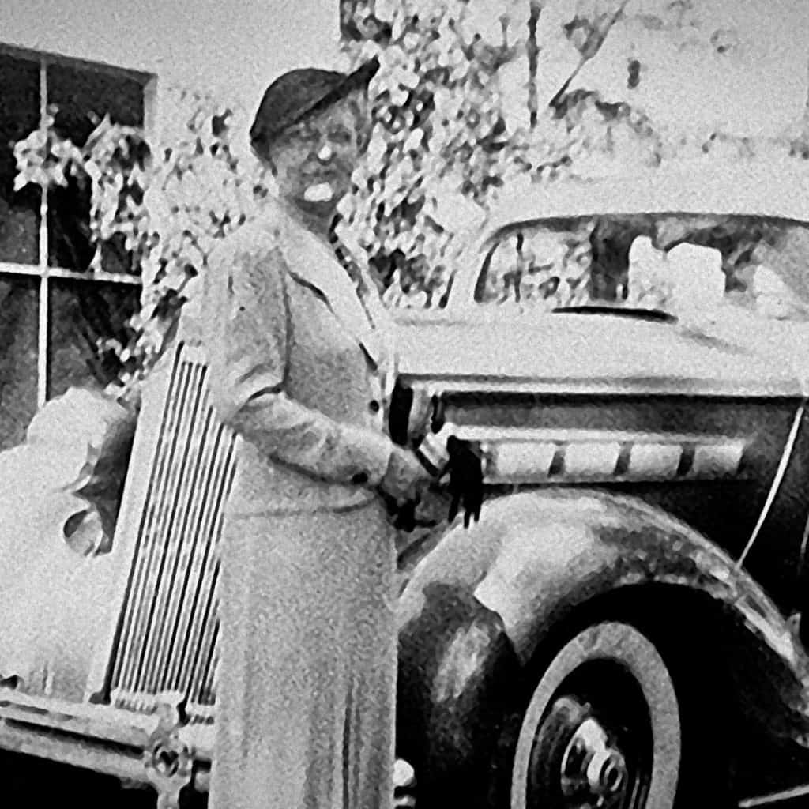

Remembering Deerfield Beach's Most Influential Couple
Origins
James Dallas Butler was born in Cairo, Georgia on December 7th, 1877. He lacked formal education; however, he enjoyed literature and had a natural ability in management. Alice on the other hand was born in Wilmington, Ohio on December 14th, 1884, where she attended a private college. Alice and James met in Texas. While the blossoming of their relationship is not well known, they were married in 1906. They would have their first daughter in Carthage, Texas, however she would tragically pass away at eighteen months old.
Life in Deerfield
In 1910, James and Alice decided to visit relatives in what is now Deerfield Beach, Florida. At this time, only about 4,000 acres of land was under cultivation in Deerfield. It was very much still virgin land. Both were intrigued by the potential the land had, and Alice decided that they should stay to make a life there. In February 1910, the couple opened a small store. Additionally, a second daughter was born, however she too soon passed away.
In 1911, James would build a new mercantile store. However, he took a keen interest in the potential of agriculture in Deerfield Beach. In 1912, he would acquire 50 acres for farming, where he grew green beans, zucchini, squash, watermelon, etc. James saw an excellent opportunity of exporting his product along the east coast by the Florida East Coast Railway, built by Henry Flagler. Over time, he would substantially grow his farm until he was one of the largest landowners in the region. This enabled the Butler family to acquire a vast amount of wealth.

The Butler House, 1923
Image from Deerfield Beach Historical Society

The Butler House, Present
In addition to owning farmland, James and Alice built the Butler House in 1923. It is notable as the first building in Deerfield to have electricity and indoor plumbing. Even though the Butlers had a vast wealth, it is notable that they lived a modest lifestyle in their home, being comparable in size to many middle-class homes in Deerfield today. The Butler House was bequeathed to the Deerfield Beach Historical Society in 1976. Today, it is a part of the National Register of Historic Places and can be toured by the public.
Impact on Deerfield
James and Alice would not use their wealth just to live a comfortable life, however. The Butlers used their influence to progress the community and encourage development. James, along with other prominent residents, helped incorporate Deerfield into the state officially, turning it into the Town of Deerfield. They would go on to play a critical role in the growth of Deerfield Beach throughout the 1930s-50s, providing economic and social backing.

They didn’t do this out of any ulterior motive or to grow their own personal wealth, but simply because they were kind Midwesterners. David Lenhart, a member of the Deerfield Beach Historical Society, stated “They recognized that they were in the DNA of this community.” They had a vision of a community of good people, hard work, and dedication, and utilized their influence to achieve this vision, and would work to further this vision until James’s death on September 17th, 1965, and Alice’s death on December 17th, 1976, respectively.
Throughout their lives, the Butlers had a particular affinity for children, especially Alice. She was known to bake treats for the children in the community throughout her life. Their loss of three children was especially heartbreaking because of this. Through her generosity, Alice decided to use the funds of the Butler family to create the J.D. Butler and Alice Butler Scholarship Foundation upon her death to help fund education for graduates of Deerfield Beach High School. You can find out more about this scholarship at the Deerfield Beach High School website.

Conclusion
The Butler’s integral role in the development of Deerfield Beach, the Butler House, and finally this scholarship ensure that the impact of J.D. and Alice Butler will be felt for many future generations in Deerfield Beach. This shared experience of history keeps the community together. Perhaps the most important thing to learn from the Butlers, at least according to the Deerfield Beach Historical Society, is that character matters. Hard working, honest people are integral to a healthy community and to make the world better. J.D. and Alice Butler are a testament to this principle and serve as an example that anyone can improve their community.
Sources
In the creation of this memorial page, the primary source of information came from the Deerfield Beach Historical Society, with a special thanks to David Lenhart. We visited the Butler House in order to inquire about the past of the Butler family and see for ourselves the legacy of J.D and Alice Butler. Many of the images used belong to the Historical Society as well. Our other source was Sally J. Ling's "Deerfield Beach: The Land and Its People," an incredible source of information on Deerfield Beach's past.